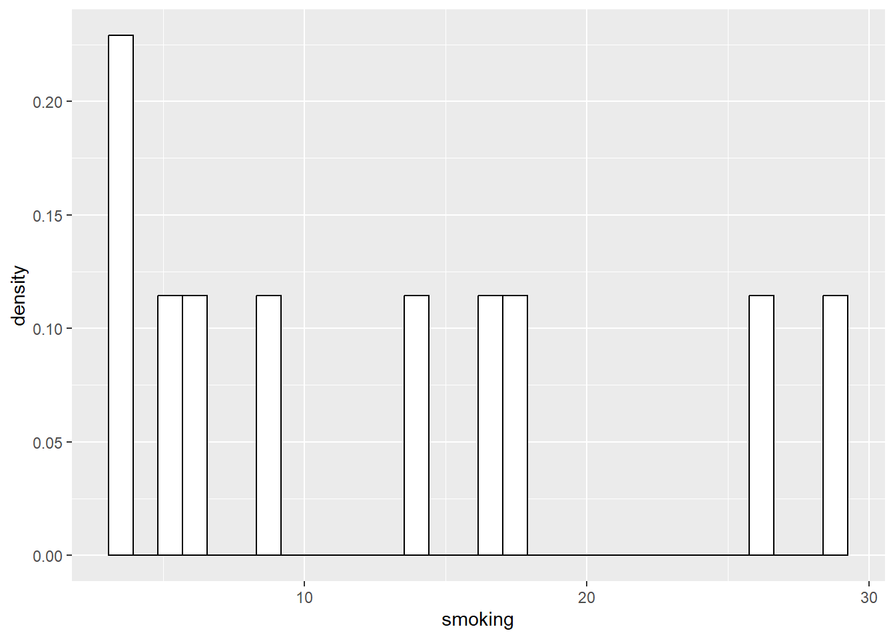
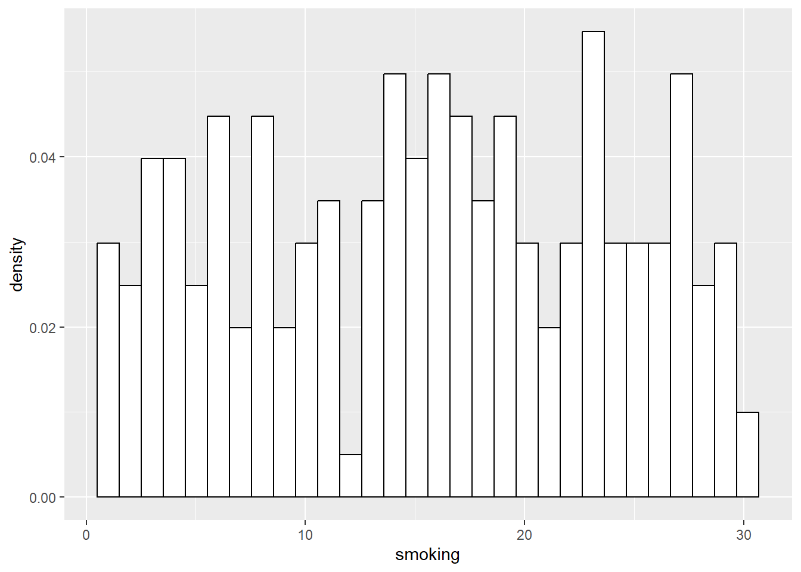

Chapter 4 Beginning to Understand Uncertainty
This Chapter relates to lecture 6.
In this chapter I’ll introduce core concepts around uncertainty in our results. Understanding that the results of our analysis always contain some level of uncertainty is probably the most critical concept to get our heads around as quantitative social scientists. Most of our job is not really coming up with the actual statistics, such as the correlation coefficient, or regression beta, but is more about understanding how to interpret and use those results - i.e. what they mean. And, fundamental to that is understanding their uncertainty.
Again, to reiterate the message I sent in class, many of the examples in this Chapter, and later ones, involve randomness. This means that the results here may be slightly different numerically to the results in the slides. And, if you were to run these examples yourself, you would also get slightly different results. This is nothing to worry about, because the meaning of the results does not change.
So, to start the journey, let’s grab some data.
Here, we will again use the simple three-variable set of simulated data, which represents rates of smoking, rates of cycling, and heart disease incidence.
## # A tibble: 6 × 4
## ...1 biking smoking heart.disease
## <dbl> <dbl> <dbl> <dbl>
## 1 1 30.8 10.9 11.8
## 2 2 65.1 2.22 2.85
## 3 3 1.96 17.6 17.2
## 4 4 44.8 2.80 6.82
## 5 5 69.4 16.0 4.06
## 6 6 54.4 29.3 9.55Rather than do the full ‘describe’ as I did in the last chapter, I have simply above looked at what is called the ‘head’ of the data set or the first few rows. This is because all I want to do here is double check that I have the data, and what variables are there.
Let’s calculate some simple summary statistics from this data set to build on. For example, what is the mean and median for ‘smoking’?
## Min. 1st Qu. Median Mean 3rd Qu. Max.
## 0.5259 8.2798 15.8146 15.4350 22.5689 29.9467Now, we know this is really simulated data, but let’s imagine for now that it was actually obtained by an organization like the Office for National Statistics in the UK, using a survey. We can presume the study was done well, and thus it is based on a true random sampling method, and we assume that the study population matches whatever target population we have in mind (remember the ‘inference gaps’ discussed in class).
What we really want to know is, how close are these statistics (i.e. the mean and median) to the true population values that we would have found if we could survey the entire target population?
Let’s begin to think about this by starting to build a table using these statistics, by going back to the slide deck…
4.1 Demonstration: Sampling from a ‘Known’ Population
Now, let’s go back one more step, and demonstrate the uncertainty inherent to sample statistics by way of example.
Let’s now assume that this sample of 498 people actually is the population we are interested in.
What this means is, we can actually draw a sample from this population of 498 and see what happens.
First, let’s present the distribution for the entire ‘population’ of 498.

Now, let’s literally take a sample of 10 random cases from that population of 498. Here, we are sampling without replacement, and are thus essentially doing exactly what a hypothetical ‘researcher’ would do if they drew a random sample of 10 people to complete their survey, from the population of 498.
## # A tibble: 10 × 4
## ...1 biking smoking heart.disease
## <dbl> <dbl> <dbl> <dbl>
## 1 87 31.0 29.0 13.8
## 2 478 11.9 1.14 12.8
## 3 414 29.0 29.2 13.8
## 4 108 22.8 9.82 10.9
## 5 91 6.95 26.1 18.7
## 6 191 46.8 27.3 10.3
## 7 470 6.30 19.4 17.8
## 8 110 68.2 2.19 1.97
## 9 216 61.5 12.8 4.97
## 10 115 2.14 25.8 19.2Next, let’s look at the relevant statistics (median and then mean) and distribution of this sample of 10:
## [1] 22.63766## [1] 18.29119
We can do the same for successively larger samples, say 50, and 200:
## # A tibble: 50 × 4
## ...1 biking smoking heart.disease
## <dbl> <dbl> <dbl> <dbl>
## 1 372 15.3 22.4 17.3
## 2 337 6.18 15.5 16.0
## 3 207 67.1 5.82 2.55
## 4 459 40.3 1.60 6.79
## 5 265 17.5 4.76 11.9
## 6 452 74.9 5.70 1.09
## 7 86 15.1 16.6 14.9
## 8 439 63.8 9.91 3.40
## 9 376 23.3 20.7 13.8
## 10 34 49.5 15.2 8.03
## # ℹ 40 more rows## [1] 15.29776## [1] 14.11533
## # A tibble: 200 × 4
## ...1 biking smoking heart.disease
## <dbl> <dbl> <dbl> <dbl>
## 1 294 67.0 24.2 5.80
## 2 21 28.5 14.9 11.7
## 3 247 49.6 16.3 8.14
## 4 69 30.7 16.7 11.8
## 5 366 19.1 27.1 16.6
## 6 270 74.0 16.9 3.84
## 7 372 15.3 22.4 17.3
## 8 70 22.9 24.6 16.2
## 9 386 65.2 24.2 7.18
## 10 120 9.65 8.37 15.6
## # ℹ 190 more rows## [1] 16.88452## [1] 16.88452
As you can see, the distributions of the smaller samples are more peaky and bumpy, because they are very sensitive to individual data points. As the sample gets larger, it starts to look more like the population right?
We can complete our table now in the slides of the sample statistics (median and mean) showing that in general, as we get closer to the population size, the statistics generally get closer too. To do so, let’s go back to the slides…